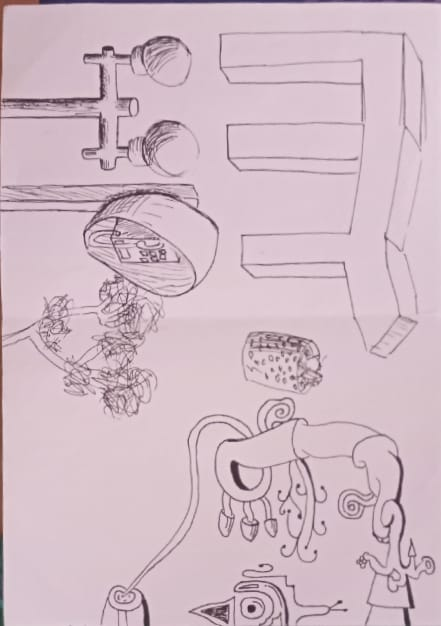
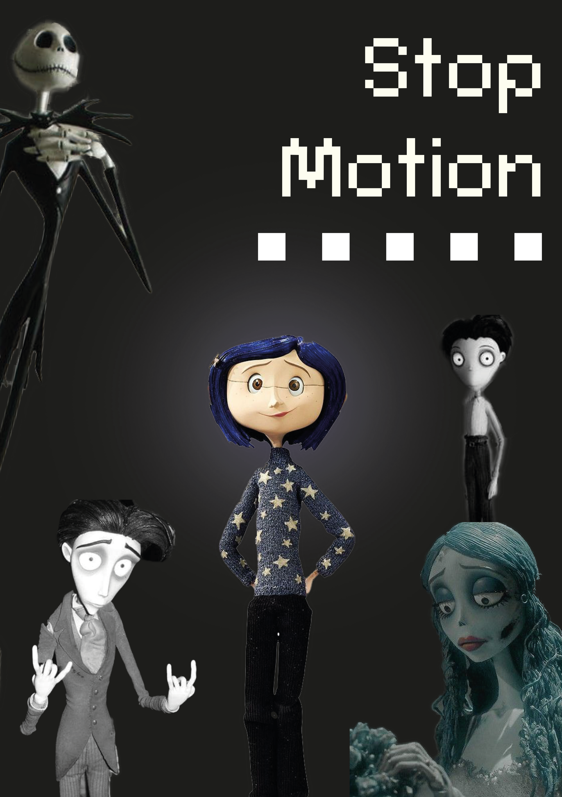
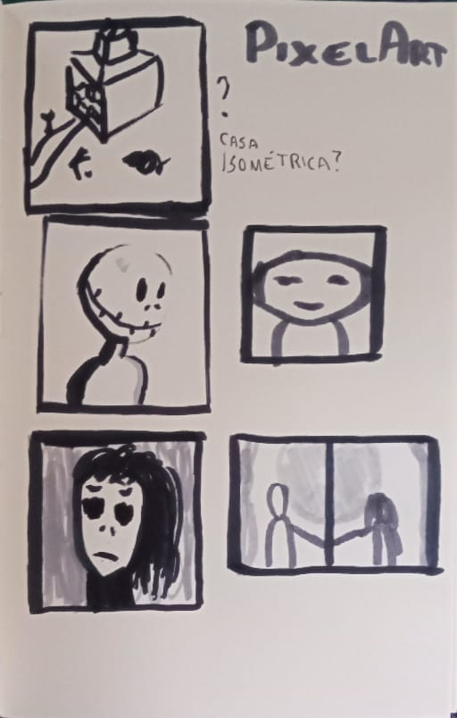
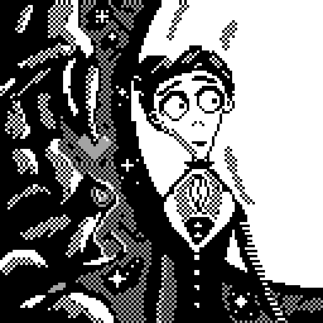
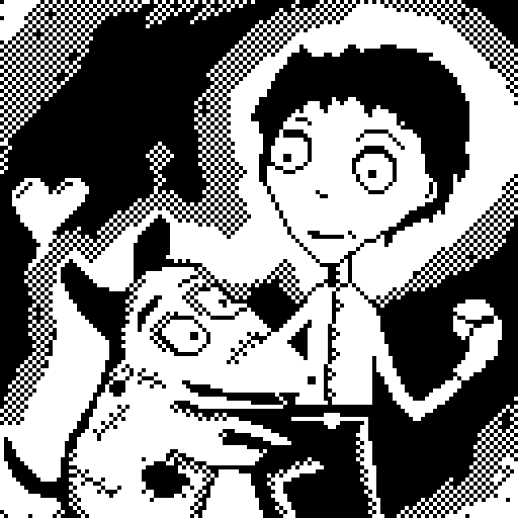
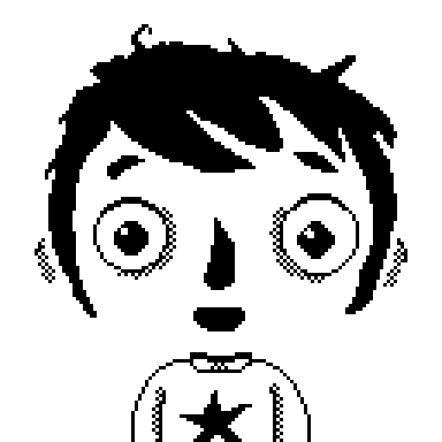
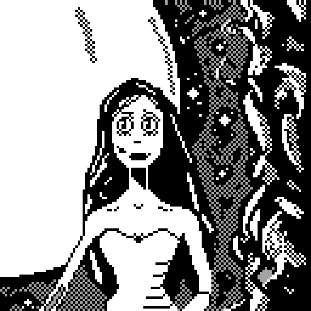
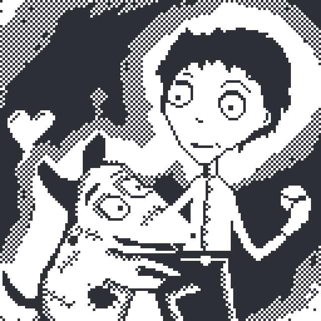
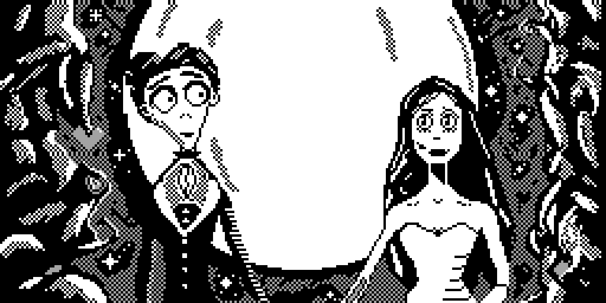

Diário Gráfico
Pixel Art
Nesse trabalho, foi requisitado uma adaptação de determinada temática para a linguagem de Pixel Art, em resoluções de 16x16, 128x128 e em um grid não quadrado. Num primeiro momento, existia a dificuldade de escolher qual temática seguir. Nesse sentido, houveram os primeiros experimentos numa visita ao Centro de Humanidades 1 na UFC:

Neste momento inicial, meu foco, influenciado pelo ambiente no qual estava, era bem direcionado aos mobiliários, aos ornamentos e as janelas daquele departamento. Apesar de gostar de certas referências, não segui nesse caminho por considerar que ele iria se tornar muito arquitetônico.
A dificuldade da escolha residia na necessidade de escolher algo que encaixava bem numa simplificação, mas que poderia escalar bem em uma resolução maior. Finalmente, decidi trabalhar com filmes de Stop Motion, especialmente os do cineasta Tim Burton. Aqui se iniciou minha coleta de referências:
Esses foram as primeiras ideias de composição a partir deste tema:
A partir disso, iniciei os trabalhos, segue um vídeo do processo no software Aseprite:
Finalmente, os trabalhos finais, inicialmente numa resolução de 16x16 e depois 128x128:
     Fiquei bem satisfeito com o resultado final. Eu já tinha certa experiência com pixel art, já tendo desenvolvido até algumas pequenas animações, então, para mim, o trabalho foi bem satisfatório, apesar de trabalhoso.
Representação Gráfica de um poema
Neste segundo grande trabalho, está sendo demandado que, a partir do poema Contraste, se crie uma composição com uma fotografia e fontes, de modo a representar visualmente o conceito compreendido do poema. O desafio está claro para mim, visto que não tenho muita experiência com fotografia.